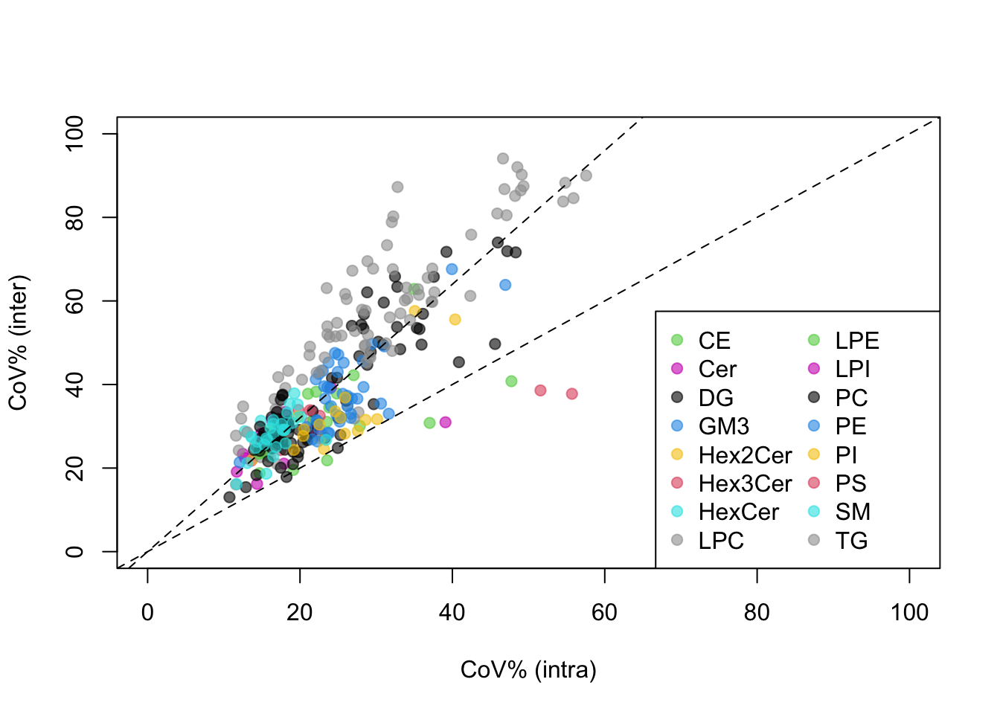
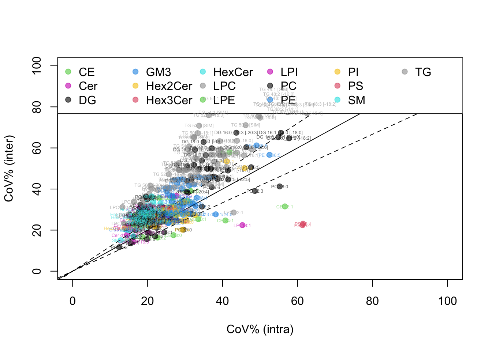

#getwd()
rm(list=ls()) ### clear the deck
## (a) qdata refers to quantitative (concentration) data
## - repeated measures (sample level)
qdata = read.csv(here::here("Part_1/output/qc_filtered_results.csv"),
header=TRUE, as.is=TRUE, check.names=FALSE)
## pdata refers to plaque volume data -- at the subject level
## (one CTCA per subject)
pdata = read.delim(here::here("Part_2/data/SPERFECT_plaque_data.txt"),
header=T, as.is=T, check.names=F)
## sdata refers to sample information table
## (subjects appearing multiple times)
sdata = read.delim(here::here("Part_2/data/SPERFECT_MS_injection_sequence.txt"),
header=T, as.is=T, check.names=F)
colnames(qdata)[1] = "Sample ID"Part 2: iSLS11 Data Analysis Workshop
Introduction
In this part of the workshop, we will explore the quantitative lipidomics data reported from the rigorous quality control process from Part 1. First we create an empty folder (output) to store graphics and tables we will produce along the way.
Read concentration data (repeated measures), plaque volume data (subject level), and sample injection sequence table into R’s workspace from the folder named data In this data, each participant or subject has two to five visits for blood sampling. Meanwhile, each subject visited one more time for coronary artery imaging via computed tomography coronary angiography (CTCA) at the end of the follow-up. The concentration data were available for each visit, or at the sample level, and the plaque data were saved at the subject level.
Note that CTCA could not be performed for all subjects. We need to do a little bit of matching and aligning exercise between the concentration table, MS analysis sequence table, and the CTCA (outcome) table. Piping is another easy way to do this, but this exercise will help you think about data structures and practice R coding.
Section 1. Data Synchronization
The goal of this section is to synchronize the three data sets by filtering and matching subjects. Let’s check the concentration data first. We verify that each subject was repeatedly sampled multiple times (3 to 5 times mostly).
tmp = t(qdata[,-c(1:2)])
## first two columns were sample ID (not subject ID!) and
## injection sample type (QC / Sample)
par(mfrow=c(1,1), mar=c(2,2,2,2))
boxplot(log2(tmp), cex=.1, las=2, main="Lipidome distributions")
## Notice that there is an outlier almost at the end of the
## analysis sequence. In the original data, turns out that
## there
## Uncomment the line to identify the sample with aberrant level
apply(log2(tmp), 2, function(x) mean(x, na.rm=TRUE)) [1] -1.0204063233 -0.5332146824 -0.0566130345 -0.6926294051 0.2479817164
[6] -0.3937421053 -0.4637844559 -0.2489837310 -0.0396501710 -0.5718745227
[11] -0.6930313480 -0.2375488396 -0.9871520346 0.0140476542 -0.5943598248
[16] -0.6995613712 -0.2851026710 -0.3305482262 -0.2308877529 -0.5739781956
[21] -0.1846633406 -0.3714730862 -0.0325745182 -0.3658616138 -0.4037998391
[26] 0.0726253168 0.4242473454 -0.5172327591 -0.4347932132 -0.4742699313
[31] -0.2480661988 -0.3192556661 -0.8618479590 -0.5751910009 -0.1571242436
[36] -0.2234112387 -0.4516479948 0.1945297488 -0.0830599278 -0.4734800053
[41] 0.3394045847 -0.7582765360 -0.4298408183 -0.3299875635 0.0875469565
[46] -0.4991136170 -0.3858411765 0.0852697066 0.0033171618 -0.5651972028
[51] -1.0315882263 0.0892370045 -0.4979999900 -0.6947288260 -0.9595883768
[56] -0.8086916085 0.1242671429 -0.3768141434 -0.4425776772 -0.6986972079
[61] 0.0692622089 -0.8625198817 -0.0788393176 -0.3941407654 -0.1596074790
[66] 0.4057475747 -0.3719412881 -0.4264101884 -0.5582952012 -0.5934154707
[71] -0.2591877264 0.0470147236 -0.4303346693 -0.4123916870 0.0270574733
[76] -0.6194958565 -0.3439558284 -0.2139239687 0.2870013637 -0.3934162507
[81] 0.1464600741 0.0149271969 -0.0434281930 0.0202006930 -0.7021670540
[86] -0.4734678406 0.4747979159 -0.7075608410 -0.4868920918 -0.3046235991
[91] -0.5975631741 -0.1902203137 0.2643949552 0.0808598200 -0.2652361335
[96] -0.6228281866 0.3590183455 -0.3615387513 -0.5198718634 0.1769977004
[101] -0.3240426436 0.0230483473 -0.2198609452 -0.3602992206 0.5690075472
[106] -0.0542714469 -0.2999152805 -0.5375710138 -0.1474516191 -0.6102340451
[111] 0.0372645413 -0.2286650480 -0.2462926852 0.2297161689 0.2846196236
[116] 0.1454768448 -0.3976713564 -0.4253088765 -0.8668989958 -0.0220255732
[121] -0.1498678385 -0.0926931732 -0.0690911129 0.6577747851 -0.5017031805
[126] -0.3587515035 -0.7569689077 -0.4647562323 -0.1949400720 -0.6267381471
[131] 0.3171555085 -0.4021144188 0.0418115672 -0.4691151868 -0.4940759368
[136] 0.0924412455 0.2864552996 -0.2530521788 -0.2567364608 -0.1734012451
[141] -0.1730008569 -0.2007652702 -0.3610153061 -0.0015746528 0.0172475445
[146] -0.1300949045 -0.3978614843 0.0189879756 -0.4285082995 -0.2698699792
[151] -0.2114477504 -0.3108047980 -0.4129639159 -0.5900045093 -0.1480144267
[156] -0.3772862507 -0.2246450124 -0.1844099435 0.2358722111 0.2109168627
[161] -0.8538691552 -0.4083181801 -0.5690861143 -0.3328014306 -0.4257751071
[166] 0.1150805554 -0.3259250024 -0.0008797792 -0.0534515987 -0.1081419213
[171] 0.1507499039 -0.4164532087 -0.2039199799 -0.9552533349 0.0689674618
[176] -0.3309857177 -0.3460411204 -0.6843203684 -0.2762815676 -0.5617905828
[181] 0.0296391359 -0.4332346551 -0.5090078236 -0.2564398236 -0.5820752481
[186] -0.5559467986 -0.3216912099 -0.1461234838 -0.0892177800 -0.3516295268
[191] -0.4061460673 -0.6506698292 0.3920141803 -0.5056594501 -0.3757967476
[196] -0.7520875804 -0.7182173840 -0.5031000224 -0.1858489481 -0.2131076746
[201] -0.3921331547 -0.0746155365 -0.2113502282 0.0461484523 -0.2481536932
[206] -0.1640165035 -0.7468658239 -0.8996608536 -0.3715053722 -0.3073310977
[211] -0.5257630508 -0.4039717248 -0.2838988497 -0.6634436474 -0.5630206354
[216] 0.4536257796 -0.6492366912 -0.4715054238 -0.2103514801 0.1832515461
[221] 0.3184274296 -0.5736009564 -1.1650372211 -0.4843332701 -0.6900943513
[226] -0.4682224810 -0.4667885173 -0.0055539826 -0.6395354569 -0.5150706791
[231] -0.7013023154 -0.4183408263 0.3039148167 -0.7354012228 -0.4326603285
[236] -0.2805923586 -0.7004073909 -0.0707309969 -0.0902849364 -0.7150616634
[241] 0.0932976930 0.1507539664 -0.2643665846 -0.2591874581 -0.4018857593
[246] -0.4327262685 -0.2432582352 0.1360823925 -0.0072113054 -0.2523449628
[251] -0.4514119069 -0.0465206198 0.1315153446 -0.4741184880 -0.2306870658
[256] -0.9668960095 -0.5161118519 -0.2290901924 -0.3607239598 -0.3793458644
[261] 0.4116340744 0.1889451959 -0.0749216946 -0.5711375256 -0.6532343071
[266] 0.5149225254 -0.2977915145 -0.1045570565 0.5177085666 -0.5612985320
[271] -0.2671603971 -0.1603185015 0.2239047597 -0.0117642536 -0.4911388704
[276] -0.2524163638 -0.2457712514 -0.4335933299 -0.3009120410 0.0110940084
[281] 0.4027597784 -0.0347751437 -0.4510550101 -0.3231716614 -0.5523902281
[286] -0.0603345922 -0.3523513149 -0.0425538366 0.3607478133 0.0587752305
[291] 0.0952817681 -0.2988489642 -0.0958905648 -0.1145181734 -0.0328148482
[296] -0.0848221238 -0.0123697706 -0.3166667251 -0.4846145101 -0.3744380781
[301] 0.0864320262 0.2851753380 -0.0160505034 -0.3899744748 -0.0485679514
[306] -0.4475108085 -0.4242910673 -0.1449633991 -0.0260285781 -0.3907637776
[311] -0.4267343969 -0.2496553859 -0.6276708233 -0.2902818327 -0.8802733639
[316] -0.3628580341 -0.0567846815 -0.5027685104 0.0477922801 -0.5903616103
[321] -0.2898573682 0.0761246269 -0.0536877350 0.2141736807 0.1525220141
[326] -0.0894392882 -0.3550752078 -0.3999884002 -0.4355874321 -0.2730689320
[331] -0.9304568439 -0.3525608101 -0.0753032387 -0.4329572783 -0.0833146222
[336] -0.8571882047 -0.2370181364 -0.7331741327 -0.8266228298 -0.6118386299
[341] -0.5716763245 -0.7548418444 -0.6318865123 -1.0348280786 -0.5522134355
[346] -0.8480841769 -0.7514442598 -0.6718779568 -0.6518950576 -0.6837590497
[351] -0.8387366532 -0.1176941167 -0.5531656692 -0.3024400267 -0.3594623984
[356] -0.7944746783 -0.6860962989 -0.1585353908 -0.7799626241 -0.6592312439
[361] -0.5100083140 -0.1004261882 -0.4004634106 -0.3715040743 -0.0208472306
[366] -0.7662712497 0.1538798872 0.0743214882 -0.8732498903 -0.1740913831
[371] -0.0330328712 -0.1321927754 -0.7096020543 -0.1032313773 -0.7010088099
[376] -8.4826198124 -0.6240708459 -0.6257121851## It turns out that 376th column
rr = qdata$`Sample ID`[376]
rr[1] "LT_batch6_51"ss = sdata$`Subject ID`[sdata$`Sample ID` == rr]
ss[1] "C103"# This individual has only three data points and we have to remove one.
# He/she will later be disqualified from the analysis.
## Remove from the concentration table
qdata = qdata[-376, ]
## Also remove from the sample info table
sdata = sdata[sdata$`Sample ID` != rr, ] Now there are a few character strings to parse in the sample information table (sdata). For example, the sample identifier column can be broken into batch and order numbers, which are useful for sorting samples in injection sequence.
## Create placeholders
sdata$Batch = NA
sdata$OrderInBatch = NA
## for-loop to parse each entry
for(i in 1:nrow(sdata)) {
## Split the string by underscores
## strsplit function always returns a "list" -- double bracket at the end
tmp = strsplit(sdata$`Sample ID`[i], "_")[[1]]
## Get the batch number and order
sdata$Batch[i] = gsub("batch", "", tmp[2])
## in-batch injection sequence is easy
sdata$OrderInBatch[i] = tmp[3]
}
## Change the character strings to numeric values
sdata$Batch = as.numeric(sdata$Batch)
sdata$OrderInBatch = as.numeric(sdata$OrderInBatch)
## Creating unique subject number in the sample information table
usub = unique(sdata$`Subject ID`)
sdata$SIDnum = match(sdata$`Subject ID`, usub) ## numerical ID of subjectsNext, we are going to check how many repeated measures each individual subject has. Subjects with two or fewer observations will be removed since we have to compute within-individual coefficients of variation later on, which requires at least three observations. We also remove subjects with no plaque volume data (in pdata object).
counts = table(sdata$`Subject ID`)
patients = names(counts)
## Find subject IDs with fewer than three observations
remove.id = patients[counts < 3]
## two individuals will be lost: C103, C131
## Remove from the sample information table
remove.index = sdata$`Subject ID` %in% remove.id
sdata = sdata[-remove.index, ]
## We now remove subjects without plaque volume data (in `sdata` object)
## using R's "in-the-array" operator
all(pdata$`PATIENT CODE` %in% sdata$`Subject ID`) ## evaluates to TRUE[1] TRUEmid = sdata$`Subject ID` %in% pdata$`PATIENT CODE`
sdata = sdata[mid, ]Finally, order samples in the the concentration table using the sample ID as the match key.
all(sdata$`Sample ID` %in% qdata$`Sample ID`) ## should evaluate to TRUE[1] TRUEmid = match(sdata$`Sample ID`, qdata$`Sample ID`)
qdata = qdata[mid, ]
rownames(qdata) = qdata$`Sample ID`
qdata = qdata[,-c(1:2)]Now we have all three data sets aligned in terms of subjects.
Up to this point we only cleaned up the sample and subject information. Our molecular data are lipids – there can be meta data associated with those variables, too. For example, we can export a table of lipid names in the concentration data, and edit it outside R, and read the table back in.
lipids = colnames(qdata)
## Create a data frame with extra columns
ltab = data.frame(Lipids=lipids, Class=NA, SubClass=NA,
stringsAsFactors=F, check.names=F)
## Write it to a file
write.table(ltab, here::here("Part_2/data/Lipid_table.txt"), sep="\t",
quote=F, row.names=F, na="")We now have an opportunity to add more meta information such as the lipid class and subclass info manually, say, in Excel, and read it back in. You can perform the same operation within R as well.
ltab = read.delim(here::here("Part_2/data/Lipid_table_editted.txt"),
header=T, as.is=T, check.names=F)This information will be used frequently when we plot the data below.
Section 2. Reassuring drift and batch effects
We will now make copies of the data tables and rearrange the concentration data following the injection sequence (with sample preparation batches indicated). When we plot the concentration values this way, we can evaluate batch effects and signal drifts in each analyte. Part 1 ensures these artifacts are removed the data. Sometimes we work with data sets produced by others (e.g. facilities). In such an arrangement, it is important to request the analysis sequence and sample preparation batch information, so that you can do the following.
ord = order(sdata$`Analysis Sequence`)
sdata2 = sdata[ord, ]
qdata2 = qdata[ord, ]
## You can do the same with the newly parsed variables
## Batch and OrderInBatch
## ord = order(sdata$Batch, sdata$OrderInBatch)
## Identify the indices at which batch numbers switch
ticks = diff(as.numeric(sdata2$Batch))
ticks = which(ticks > 0)
nticks = length(ticks)
## Graphics: plot each analyte in one panel in injection sequence
## Color the dots by the extraction batches
pdf("output/analysis_sequence_plots.pdf", height=8, width=10, useDingbats=F)
par(mfrow=c(3,1))
for(k in 1:ncol(qdata2)) {
plot(qdata2[,k], pch=19, cex=.5, col=sdata2$Batch,
xlab="Analysis Sequence", ylab="Concentrations", main=colnames(qdata2)[k])
for(j in 1:nticks) abline(v=ticks[j]+0.5, lty=2, col=2)
}
dev.off()quartz_off_screen
2 Section 3. Data visualization in heatmap and projection plot
For downstream analysis, let’s first merge the plaque data (pdata) into the sample information table (sdata).
mm = match(sdata$`Subject ID`, pdata$`PATIENT CODE`)
sdata = data.frame(sdata, pdata[mm, ], ## you can use merge, dplyr::join family functions too, I'm just old-fashioned
stringsAsFactors=F, check.names=F)To visualize the entire data in a heatmap, we need to standardize the concentration levels across the lipid species, so that we can represent high and low levels with the same color scale. Here I chose to log base 2 transform and center the values by median in each lipid species.
rownames(qdata) = paste(sdata$`Subject ID`, sdata$`Sampling Time Point`, sep="_")
qdata = log2(qdata) ## for normality
q.med = apply(qdata, 2, median)
qdata.norm = sweep(qdata, 2, q.med) ## median normalized data (imputed)Before moving onto downstream analyses, let us re-order the individuals. We use the total lipid-rich plaque volume as the ordering variable as it is one of the main outcomes of interest in this study. In case there are many zero volumes (undetected plaques), we also throw in subject number as an additional ordering variable to ensure the repeated measures from the same individual are grouped together after shuffling.
ord = order(sdata$`total lipid plaq vol index`, sdata$SIDnum)
sdata = sdata[ord, ]
qdata = qdata[ord, ]
qdata.norm = qdata.norm[ord, ]
plot(sdata$`total lipid plaq vol index`)Now let’s draw the heatmap with the plaque volumes displayed as the meta information (row-wise).
#if (!require("BiocManager", quietly = TRUE))
# install.packages("BiocManager")
#BiocManager::install("ComplexHeatmap")
#install.packages("circlize")
#or devtools::install_github("jokergoo/circlize")
library(circlize)========================================
circlize version 0.4.15
CRAN page: https://cran.r-project.org/package=circlize
Github page: https://github.com/jokergoo/circlize
Documentation: https://jokergoo.github.io/circlize_book/book/
If you use it in published research, please cite:
Gu, Z. circlize implements and enhances circular visualization
in R. Bioinformatics 2014.
This message can be suppressed by:
suppressPackageStartupMessages(library(circlize))
========================================library(ComplexHeatmap) Loading required package: grid========================================
ComplexHeatmap version 2.14.0
Bioconductor page: http://bioconductor.org/packages/ComplexHeatmap/
Github page: https://github.com/jokergoo/ComplexHeatmap
Documentation: http://jokergoo.github.io/ComplexHeatmap-reference
If you use it in published research, please cite either one:
- Gu, Z. Complex Heatmap Visualization. iMeta 2022.
- Gu, Z. Complex heatmaps reveal patterns and correlations in multidimensional
genomic data. Bioinformatics 2016.
The new InteractiveComplexHeatmap package can directly export static
complex heatmaps into an interactive Shiny app with zero effort. Have a try!
This message can be suppressed by:
suppressPackageStartupMessages(library(ComplexHeatmap))
========================================## Meta information first
set.seed(12345679)
row_ha = HeatmapAnnotation(Total=anno_barplot(sdata$`Total Plaque vol index`),
Calcified=anno_barplot(sdata$`total calc plaq vol index`),
LipidRich=anno_barplot(sdata$`total lipid plaq vol index`),
Fibrotic=anno_barplot(sdata$`total fibrot plaq vol index`),
annotation_name_rot = 270,
which="row", border=TRUE, show_legend=TRUE)
col_ha = HeatmapAnnotation(LipidClass=ltab$Class,
which="col", border=TRUE, show_legend=TRUE)
## Draw heatmap and save it to a pdf file
pdf("output/heatmap_lipids.pdf", height=30, width=30)
Heatmap(as.matrix(qdata.norm), name = "Normalized Levels",
cluster_rows = FALSE,
cluster_columns = TRUE,
row_names_gp = gpar(fontsize = 6),
column_names_gp = gpar(fontsize = 8),
column_title = "",
col = colorRamp2(c(-2, 0, 2), c("blue", "white", "red")),
left_annotation = row_ha,
top_annotation = col_ha,
clustering_distance_rows = "pearson",
clustering_method_rows = "average",
clustering_distance_columns = "pearson",
clustering_method_columns = "average"
)
dev.off()quartz_off_screen
2 Principal Component Analysis (PCA): We perform PCA and draw the projection plot on the new axes defined by PC1 and PC2. One we figure out that step, we can then track each individual’s time course trajectory over this map.
tmp = qdata
tmp.pca = prcomp(tmp, scale.=TRUE)
vv = tmp.pca$sdev^2
vv = round(vv / sum(vv) * 100, 2)
print(vv) [1] 27.95 20.90 5.02 4.63 3.72 3.44 2.80 2.66 2.30 1.73 1.61 1.36
[13] 1.14 0.95 0.89 0.81 0.80 0.70 0.66 0.62 0.58 0.53 0.50 0.48
[25] 0.45 0.42 0.40 0.38 0.36 0.35 0.33 0.32 0.32 0.30 0.28 0.27
[37] 0.25 0.24 0.23 0.21 0.21 0.19 0.19 0.18 0.18 0.17 0.17 0.16
[49] 0.16 0.16 0.15 0.14 0.14 0.13 0.13 0.13 0.12 0.12 0.12 0.11
[61] 0.11 0.11 0.11 0.10 0.10 0.10 0.10 0.09 0.09 0.09 0.09 0.08
[73] 0.08 0.08 0.08 0.07 0.07 0.07 0.07 0.07 0.07 0.06 0.06 0.06
[85] 0.06 0.06 0.06 0.06 0.06 0.06 0.05 0.05 0.05 0.05 0.05 0.05
[97] 0.05 0.05 0.05 0.05 0.04 0.04 0.04 0.04 0.04 0.04 0.04 0.04
[109] 0.04 0.04 0.04 0.03 0.03 0.03 0.03 0.03 0.03 0.03 0.03 0.03
[121] 0.03 0.03 0.03 0.03 0.03 0.03 0.03 0.03 0.03 0.03 0.03 0.02
[133] 0.02 0.02 0.02 0.02 0.02 0.02 0.02 0.02 0.02 0.02 0.02 0.02
[145] 0.02 0.02 0.02 0.02 0.02 0.02 0.02 0.02 0.02 0.02 0.02 0.02
[157] 0.02 0.02 0.01 0.01 0.01 0.01 0.01 0.01 0.01 0.01 0.01 0.01
[169] 0.01 0.01 0.01 0.01 0.01 0.01 0.01 0.01 0.01 0.01 0.01 0.01
[181] 0.01 0.01 0.01 0.01 0.01 0.01 0.01 0.01 0.01 0.01 0.01 0.01
[193] 0.01 0.01 0.01 0.01 0.01 0.01 0.01 0.01 0.01 0.01 0.01 0.01
[205] 0.01 0.01 0.01 0.01 0.01 0.01 0.01 0.01 0.00 0.00 0.00 0.00
[217] 0.00 0.00 0.00 0.00 0.00 0.00 0.00 0.00 0.00 0.00 0.00 0.00
[229] 0.00 0.00 0.00 0.00 0.00 0.00 0.00 0.00 0.00 0.00 0.00 0.00
[241] 0.00 0.00 0.00 0.00 0.00 0.00 0.00 0.00 0.00 0.00 0.00 0.00
[253] 0.00 0.00 0.00 0.00 0.00 0.00 0.00 0.00 0.00 0.00 0.00 0.00
[265] 0.00 0.00 0.00 0.00 0.00 0.00 0.00 0.00 0.00 0.00 0.00 0.00
[277] 0.00 0.00 0.00 0.00 0.00 0.00 0.00 0.00 0.00 0.00 0.00 0.00
[289] 0.00 0.00 0.00 0.00 0.00 0.00 0.00 0.00 0.00 0.00 0.00 0.00
[301] 0.00 0.00 0.00 0.00 0.00 0.00 0.00 0.00 0.00 0.00 0.00#install.packages("scales")
#install.packages("devtools")
#devtools::install_github("r-lib/scales")
library(scales)
# The output will be a multi-page deck of the same PCA plots,
# with each plot showing one subject's trajectory over the PC coordinates.
pdf("output/PCAplot.pdf", height=12, width=11, useDingbats = FALSE)
par(mfrow=c(3,3))
THRES = max(abs(tmp.pca$x[,1]))
dot.col = alpha(sdata$SIDnum, 0.5)
dot.size = sdata$`Total Plaque vol index`
dot.size = dot.size / mean(dot.size) ## "normal" dot size is 1
##### OVERALL PLOT FIRST
plot(tmp.pca$x[,1], tmp.pca$x[,2],
col=dot.col, pch=19,
cex = dot.size, ### dot size proportional to total plaque volume
xlab=paste("PC1 (", round(vv[1],1), "%)", sep=""),
ylab=paste("PC2 (", round(vv[2],1), "%)", sep=""),
main="SPERFECT",
xlim=c(-THRES,THRES), ylim=c(-THRES,THRES))
abline(v=0, lty=2)
abline(h=0, lty=2)
#### Trajectory tracing of individual subjects
#### Per individual --> for loop
subjects = unique(sdata$`Subject ID`)
nsubjects = length(subjects)
mm = match(subjects, sdata$`Subject ID`) ## mapping back to expanded table
subject.col = sdata$SIDnum[mm]
proj = tmp.pca$x[,1:2] ### PC1 and PC2 coordinates only
for(i in 1:nsubjects) {
## Background plot
plot(tmp.pca$x[,1], tmp.pca$x[,2],
col=dot.col, cex=.5,
xlab=paste("PC1 (", round(vv[1],1), "%)", sep=""),
ylab=paste("PC2 (", round(vv[2],1), "%)", sep=""),
main=subjects[i],
xlim=c(-THRES,THRES), ylim=c(-THRES,THRES))
abline(v=0, lty=2)
abline(h=0, lty=2)
## Get indices of observations for the corresponding individual
coord = which(sdata$`Subject ID` == subjects[i])
nn = length(coord)
## Draw arrows by connecting adjacent time points
for(k in 2:nn) {
x0 = proj[coord[k-1],1]
y0 = proj[coord[k-1],2]
x1 = proj[coord[k],1]
y1 = proj[coord[k],2]
arrows(x0,y0,x1,y1, col=subject.col[i], length=0.07, lwd=1.5)
}
## Put text labels
for(k in 1:nn) {
x1 = proj[coord[k],1]
y1 = proj[coord[k],2]
text(x1, y1, subjects[i], cex=.4, col=subject.col[i])
}
}
dev.off()quartz_off_screen
2 
Section 4. Clustering of subjects by plaque volume (outcome data only)
## Plaque values are all in different absolute levels
## For heatmap visualization, it is necessary to normalize them
## so that they are in the same scale.
pdata2 = pdata[,-1]
rownames(pdata2) = pdata[,1]
for(k in 1:ncol(pdata2)) {
pdata2[,k] = pdata2[,k] / mean(pdata2[,k])
}
## Plot the data
pdf("output/heatmap_subjects_outcome.pdf", height=10, width=5)
Heatmap(as.matrix(pdata2), name = "Normalized Volumes",
cluster_rows = TRUE,
cluster_columns = TRUE,
row_names_gp = gpar(fontsize = 6),
column_names_gp = gpar(fontsize = 8),
column_title = "Plaque volume",
col = colorRamp2(c(0, 3), c("white", "red")),
clustering_distance_rows = "pearson",
clustering_method_rows = "average",
clustering_distance_columns = "pearson",
clustering_method_columns = "average"
)
dev.off()quartz_off_screen
2 Let’s use hierarchical clustering as the results with three obvious clusters seem to make sense (this may differ slightly from the data published in the paper).
## Use the same distance metric and linkage method used above
dd = as.dist(1-cor(t(pdata2)))
hc=hclust(dd, method="average")
## Visualize the dendrogram
par(mfrow=c(1,1))
plot(hc, main="Pearson / Average Linkage", xlab="", sub="", cex=.9)clus = cutree(hc, 3)
## Save the subject IDs for individual clusters
C1 = names(clus)[clus == 1] ## Lipid-rich plaque
C2 = names(clus)[clus == 2] ## Low plaque
C3 = names(clus)[clus == 3] ## Calcified plaque
## Assign the group labels onto the sdata object (sample info table)
sdata$Cluster = NA
sdata$Cluster[sdata$`Subject ID` %in% C1] = "Lipid"
sdata$Cluster[sdata$`Subject ID` %in% C2] = "Low"
sdata$Cluster[sdata$`Subject ID` %in% C3] = "Calcified"
sdata$Cluster = factor(sdata$Cluster, levels=c("Low","Lipid","Calcified"))Section 5. Dissecting the within-individual and between-individual variabilities
In this section, we dissect the overall variance of each lipid species into the within-individual variability (coefficient-of-variation w) and the between-individual variability (coefficient-of-variation g). Theoretically speaking, the former also absorbs much of the analytical variability (e.g. %CoV from technical QCs), but we will ignore this in this workshop. These measures are population-level characteristics of analytes – we are trying to estimate them from this data set. Usually these values are estimated from a large cohort (N>1,000) for clinical-grade assays.
Why do we do this? First of all, it is informative – how the variability varies across lipid classes in the circulating blood. Second, conventionally good biomarkers are the ones with large inter-individual variability and small intra-individual variability. Hence this characterization can help us prioritize the lipid classes in biomarker studies.
First, we write a function to compute the coefficient of variation (CoV%) from log-transformed data (mention Canchola et al paper) - the formula is not the ratio of stdev over mean!
cov.logged = function(x, logbase=2) {
var.x = var(x, na.rm=TRUE)
cv = logbase^(log(logbase) * var.x) - 1
#log function in R is natural log
sqrt(cv) * 100
}Using this function, we approximate the intra-individual variability (CoV_w) as follows:
## compute CoV in each individual
subjects = unique(sdata$`Subject ID`)
nsubjects = length(subjects)
lipids = colnames(qdata)
nlipids = length(lipids)
### placeholders to keep CV% values
COVtab = matrix(NA, nlipids, nsubjects)
rownames(COVtab) = lipids
colnames(COVtab) = subjects
for(i in 1:nlipids) {
for(j in 1:nsubjects) {
rid = which(sdata$`Subject ID` == subjects[j])
COVtab[i,j] = cov.logged(qdata[rid,i])
}
}
### Order by plaque clusters
groups = sdata$Cluster[match(subjects, sdata$`Subject ID`)]
ord = order(groups)
COVtab = COVtab[,ord]
groups = groups[ord]Let’s visualize the results:
set.seed(12345679)
row_ha = HeatmapAnnotation(Class=ltab$Class,
annotation_name_rot = 270,
which="row", border=TRUE, show_legend=TRUE)
col_ha = HeatmapAnnotation(Group=groups,
which="col", border=TRUE, show_legend=TRUE)
pdf("output/COV_w.pdf", height=25, width=15)
Heatmap(as.matrix(COVtab), name = "CoV",
cluster_rows = TRUE,
cluster_columns = TRUE,
row_names_gp = gpar(fontsize = 6),
column_names_gp = gpar(fontsize = 8),
column_title = "Plaque Group",
col = colorRamp2(c(20,70), c("white", "red")),
## Note the two color schemes
left_annotation = row_ha,
top_annotation = col_ha,
clustering_distance_rows = "euclidean",
clustering_method_rows = "average",
clustering_distance_columns = "pearson",
clustering_method_columns = "average"
)
dev.off()quartz_off_screen
2 Now, how should we estimate the inter-individual variability (CoV_g)? As a short-cut method, we can approximate this by calculating CoV_g at the averaged (log2) data:
mm = match(subjects, sdata$`Subject ID`)
qdata.avg = qdata[mm, ]
for(i in 1:nsubjects) {
rid = which(sdata$`Subject ID` == subjects[i])
## averaging over replicates
qdata.avg[i, ] = apply(qdata[rid, ], 2, mean)
}
COVg_vec = rep(NA, nlipids)
for(i in 1:nlipids) {
COVg_vec[i] = cov.logged(qdata.avg[,i])
}Now we average the within-individual CoV (CoV_w) to compare the two CoV’s:
COVw_vec = apply(COVtab, 1, median)Visualizing this:
## colors for lipid classes
cl = as.numeric(factor(ltab$Class)) * 3
cl = alpha(cl, 0.6) ### opacity
## Scatter plot, with within-individual on the X-axis
## between-individual on the Y-axis
plot(COVw_vec, COVg_vec, xlab="CoV% (intra)", ylab="CoV% (inter)",
xlim=c(0,100), ylim=c(0,100),
pch=19, col=cl)
abline(0,1.6,lty=2) ## shows CoV_g > CoV_w
abline(0,1,lty=2)
## Create a legend
uclass = unique(ltab$Class)
ucolor = cl[match(uclass,ltab$Class)]
legend("bottomright", legend=uclass, col=ucolor, pch=19, ncol=2)
Note: this approximation-based analysis is not a perfect one. It can either over-estimate the CoV_g or under-estimate CoV_w - either or both. The two measures of variability have to be simultaneously deconvoluted from the data, not separately. Recall that purely analytical variability (CoV_a) was also ignored, but this can only be estimated using repeated injections of a QC sample.
Here is a more model-based method to obtain the proper variance parameters from the data (usually done for a population-scale data set). We first get the variance / standard deviation values pertaining to the inter- and intra-individual variabilities using linear mixed effects models:
library(nlme)
sid = sdata$`Subject ID`
sigma_g = rep(NA, nlipids)
sigma_w = rep(NA, nlipids)
names(sigma_g) = names(sigma_w) = ltab$Lipids
## Each lipid
for(j in 1:nlipids) {
if(j %% 20 == 0) print(j) ## print progress every 20th lipid
y = qdata[,j]
## Fit LME model with simple random effects
## representing individual specific lipid levels
## (random intercept)
lme.fit = lme(y ~ 1, random = ~1|sid)
## Get the variance component of the random effects
vv = as.numeric(VarCorr(lme.fit)[,2])
sigma_g[j] = vv[1] ## inter
sigma_w[j] = vv[2] ## Rest of the error variance goes to intra
}[1] 20
[1] 40
[1] 60
[1] 80
[1] 100
[1] 120
[1] 140
[1] 160
[1] 180
[1] 200
[1] 220
[1] 240
[1] 260
[1] 280
[1] 300We also write another function that directly translates standard deviation into CoV%:
cov.logged.sd = function(sd.x, logbase=2) {
cv = logbase^(log(logbase) * sd.x^2) - 1 #log function in R is natural log
sqrt(cv) * 100
}and compute intra- and inter-individual CoV% values:
COVw_vec = cov.logged.sd(sigma_w) ## intra-individual CoV (+ analytical)
COVg_vec = cov.logged.sd(sigma_g) ## inter-individual CoVVisualize this:
plot(COVw_vec, COVg_vec, xlab="CoV% (intra)", ylab="CoV% (inter)",
xlim=c(0,100), ylim=c(0,100),
pch=19, col=cl)
abline(0,1.2,lty=2)
abline(0,1,lty=1)
abline(0,1/1.2,lty=2)
legend("topleft", legend=uclass, col=ucolor, pch=19, ncol=6)
text(COVw_vec, COVg_vec, labels = ltab$Lipids, cex=.4, col=cl)
This recovers the main Figure 3 in Tan et al. (except for a few species). I also remark that the CoV_w values are still inclusive of the analytical variability. For this reason, most of the true values will shift to the left side of the canvas had we accounted for the analytical variability. A discussion point: which analytes would be the best clinical markers if (hypothetically) all of them were candidates?
Section 6. Visit-to-visit variability analysis
Create a new data set containing the within-individual standard deviation of log2 concentrations for each lipid species. These values will serve as the proxy for “visit-to-visit variability”.
mm = match(subjects, sdata$`Subject ID`)
qdata.sd = qdata[mm, ]
## For each subject, get stdev
for(i in 1:nsubjects) {
rid = which(sdata$`Subject ID` == subjects[i])
qdata.sd[i, ] = apply(qdata[rid, ], 2, sd)
}
rownames(qdata.sd) = subjects
## Get matching plaque volume data
Cluster = sdata$Cluster[mm]
TotalPL = sdata$`Total Plaque vol index`[mm]
CalcPL = sdata$`total calc plaq vol index`[mm]
LipidPL = sdata$`total lipid plaq vol index`[mm]
FibroPL = sdata$`total fibrot plaq vol index`[mm]Now using this new data frame as input, we perform association tests between the visit-to-visit variability and plaque volumes. We first write some functions:
tertiles = function(x) {
qpt = quantile(x, c(0,1/3,2/3,1), na.rm=TRUE)
nx = length(x)
y = rep(1, nx)
for(i in 1:nx) {
for(k in 2:3) {
if(x[i] > qpt[k] & x[i] <= qpt[k+1]) y[i] = k
}
}
#y = factor(y, levels=c(1:3))
y
}
quartiles = function(x) {
qpt = quantile(x, c(0,0.25,0.5,0.75,1), na.rm=TRUE)
nx = length(x)
y = rep(1, nx)
for(i in 1:nx) {
for(k in 2:4) {
if(x[i] > qpt[k] & x[i] <= qpt[k+1]) y[i] = k
}
}
#y = factor(y, levels=c(1:4))
y
}
quartiles(LipidPL) ## test [1] 1 1 1 1 1 1 1 1 1 1 1 1 1 1 1 1 1 1 1 1 2 2 2 2 2 2 2 2 2 2 2 2 2 2 2 2 2 2
[39] 2 2 3 3 3 3 3 3 3 3 3 3 3 3 3 3 3 3 3 3 3 4 4 4 4 4 4 4 4 4 4 4 4 4 4 4 4 4
[77] 4 4 4Now run through the analysis:
pval.T = pval.F = pval.L = pval.C = rep(NA, nlipids)
names(pval.T) = names(pval.L) = names(pval.C) = colnames(qdata.sd)
for(j in 1:nlipids) {
## Total
tmp.test = lm(qdata.sd[,j] ~ quartiles(TotalPL))
tmp.test.0 = lm(qdata.sd[,j] ~ 1)
pval.T[j] = anova(tmp.test, tmp.test.0)$`Pr(>F)`[2]
## Calcified
tmp.test = lm(qdata.sd[,j] ~ tertiles(CalcPL))
tmp.test.0 = lm(qdata.sd[,j] ~ 1)
pval.C[j] = anova(tmp.test, tmp.test.0)$`Pr(>F)`[2]
## Lipid-rich
tmp.test = lm(qdata.sd[,j] ~ quartiles(LipidPL))
tmp.test.0 = lm(qdata.sd[,j] ~ 1)
pval.L[j] = anova(tmp.test, tmp.test.0)$`Pr(>F)`[2]
## Fibrotic
tmp.test = lm(qdata.sd[,j] ~ quartiles(FibroPL))
tmp.test.0 = lm(qdata.sd[,j] ~ 1)
pval.F[j] = anova(tmp.test, tmp.test.0)$`Pr(>F)`[2]
}We visualize the lipids of which the visit-to-visit variability is associated with the lipid-rich plaque volume:
## Again, homogenizing the levels across different plaque types
## to synchronize colors in the heatmap
qdata.sd.norm = qdata.sd
for(k in 1:ncol(qdata.sd)) qdata.sd.norm[,k] = qdata.sd.norm[,k] / mean(qdata.sd.norm[,k])
### Lipid-rich plque
ord = order(LipidPL)
col_ha = HeatmapAnnotation(Cluster=Cluster,
Total=anno_barplot(TotalPL),
Calcified=anno_barplot(CalcPL),
LipidRich=anno_barplot(LipidPL),
Fibrotic=anno_barplot(FibroPL),
which="col", border=TRUE, show_legend=TRUE)
sel = pval.L <= 0.1
row_ha = HeatmapAnnotation(LipidClass=ltab$Class[sel],
which="row", border=TRUE, show_legend=TRUE)
set.seed(12345679)
pdf("output/SDassociation_heatmap_LipidRich.pdf", height=6, width=9)
X = as.matrix(qdata.sd.norm)[,sel]
Heatmap(t(X), name = "CoV",
cluster_rows = TRUE,
cluster_columns = FALSE,
row_names_gp = gpar(fontsize = 6),
column_names_gp = gpar(fontsize = 8),
column_title = "Plaque Group",
col = colorRamp2(c(0.5,2), c("white", "red")),
left_annotation = row_ha,
top_annotation = col_ha,
clustering_distance_rows = "euclidean",
clustering_method_rows = "average",
clustering_distance_columns = "pearson",
clustering_method_columns = "average"
)
dev.off()quartz_off_screen
2 Results are slightly different from the published results because we cannot reveal gender and age in this data set (due to the risk of re-identifiability).